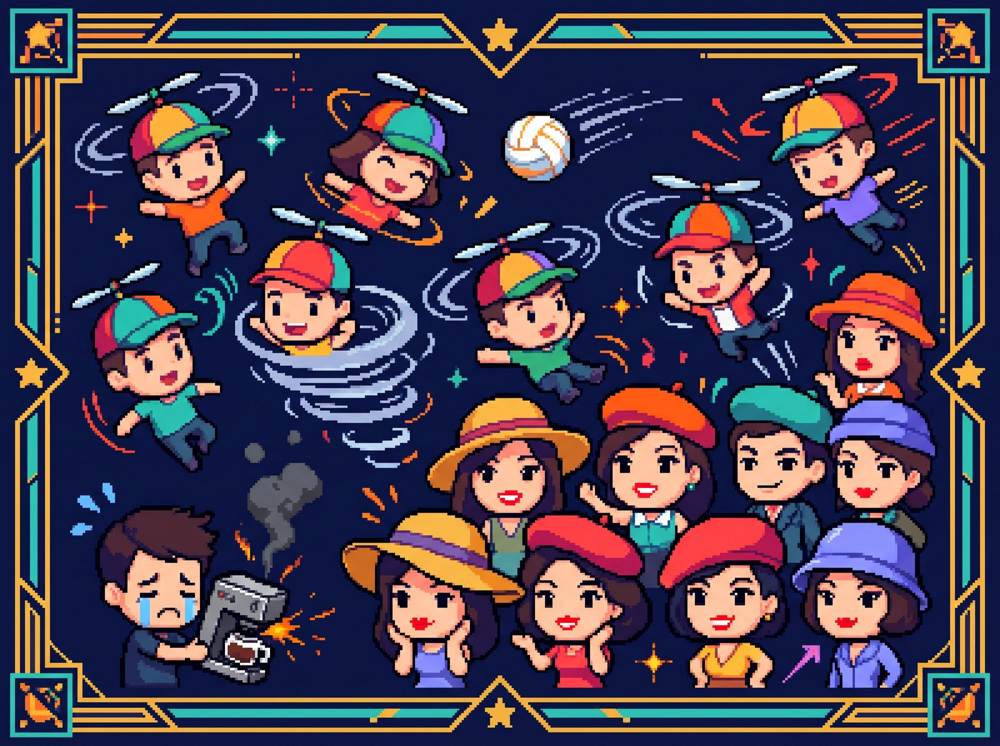
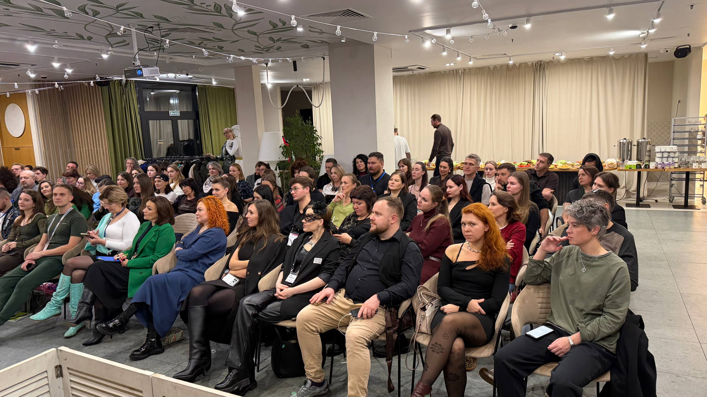
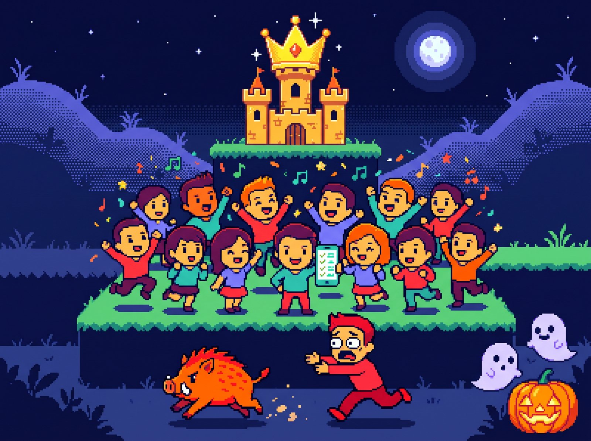
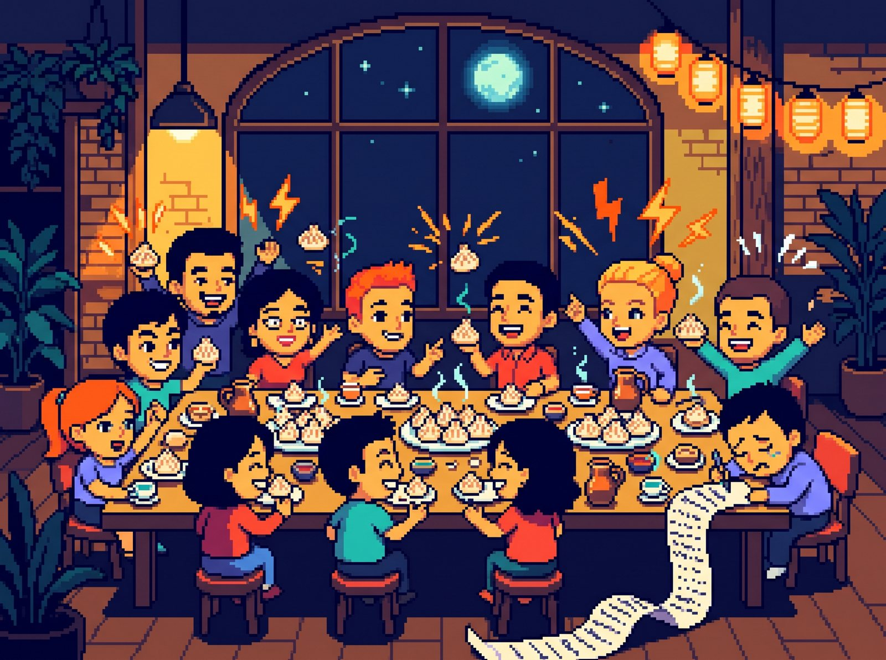

Влияторы
2 510
Екатерина Ткачёва свела отчёты и домашку за 16 ноября. В обоих списках 12 из 12. Через два дня Татьяна Суязова собрала 12 из 12 отчётов и минуток.
Сводка ТкачёвойШЛВ 41 Вечернее шоу № 02
Четыре занятия позади. Пиксельный приготовил награды. Бумажный распечатал переписку.
В студии
Открывай карточки. За каждой один из людей, которых было слышно на экваторе.
Сорок первый, добрый вечер! Бумажный, встань. Людям надо поаплодировать.
Бумажный у микрофона
Папки по переписке. На каждой есть источник и реплика ведущего.

Виктор написал, что у него не работает приложение, и перечислил, что уже проверил VPN и разные сети. В 18:10 в списке было 5 из 14, а ровно в 23:59 в чат прилетело «Сдала 😂».
Пиксельный: «Для тех, кто сдаёт в 23:59, минуты нужны с запасными секундами».
Проблема с приложением · Список ДЗ · Последняя минутаЯна помогла «Империи» согласовать график и формат отчётов контролёров. Лена и Женя остались кураторами команды. Капитан заодно выяснил, какие у него права.
Бумажный: «Ты сначала выясни, кто у тебя куратор. Категорию B выдадим после».
График и регламент · Вопрос капитана · Ответ Яны о кураторахТерра вернула редактирование ДЗ и отчётов. Можно было поправить текст в приложении, а в Telegram оставалась старая версия. Контролёры получили сразу две реальности.
Пиксельный: «Класс. Теперь у отчёта есть режиссёрская версия».
Что обновилиДмитрий Эснер провёл открытый урок. В отчёте капитана «Империи» указаны восемь подтверждённых гостей и 6 400 ₽ оплат. 19 ноября Елена объявила, что команда пригласила больше всех гостей и выиграла мастермайнд с Дмитрием.
Бумажный: «На раппорте впервые появился приз за то, что ты привёл друзей».
Отчёт капитана · Объявление победыСевиль предложила приходить на каждое занятие в новом архетипе. Для следующего урока выбрали образ Дитя: пастельные тона и лёгкие ткани.
Пиксельный: «Учиться через образ — отличная идея». Бумажный: «Главное, чтобы к архетипу приложили домашку».
Предложение Севиль и примерыМультвставка · сценка
Пиксельный уже подписал приказ о дежурстве Дмитрия. Бумажный принёс переписку с Яной. Короткая сценка о том, что могло бы случиться в «Империи».
Пиксельный берётся назначать Дмитрия на дежурство, Бумажный перехватывает реплику. Тут выясняется, что у Дмитрия совсем другой выход на сцену: открытый урок и мастермайнд для команды-победителя.
Пиксельный у табло
Срез с 28 октября по 18 ноября включительно. Сообщения включают фото и посты бота. Реакции посчитаны на момент выгрузки. В карточках команд — число сообщений в каждой командной ветке.
В списках сравниваем две даты. В счётчик Telegram входят ещё кураторы и боты.
Нажми на столбец, чтобы увидеть точное число.
На сцене
Пиксельный: У каждой команды есть своя история. Бумажный: И своя папка с цифрами.

Екатерина Ткачёва свела отчёты и домашку за 16 ноября. В обоих списках 12 из 12. Через два дня Татьяна Суязова собрала 12 из 12 отчётов и минуток.
Сводка Ткачёвой«Мы же К-команда!» Ирина Сергеева предложила ехать на благопроект всей командой и вместе снять видеотчёт.
Предложение Ирины
Четыре дня с отчётами 12 из 12 за неделю 11–17 ноября. Наталья Аржавитина держала аренду, Яна Савина помогла с регламентом. Следом команда взяла мастермайнд.
Отчёт капитана
Ирина Леккерева закрыла пятницу с отчётами вовремя и отправила команду отдыхать. На той же неделе Алексей Майоров и Роман Васильев взяли на себя руководство.
Пятничная сводка · Передача ролиЧат потока. В выгрузке первого выпуска было 68 аккаунтов, 23 ноября Telegram показывает 57. Разница — 11 аккаунтов. В первой выгрузке отдельно посчитаны 98 учеников за всё время и 58 на дату выпуска. Численность чата включает команду школы и ботов.
Империя. В сводке первого выпуска 13 человек, в отчёте от 17 ноября — 12, в таблице от 20 ноября — 10.
Смена команды. По графику из отчёта капитана Виктор ещё контролировал «Империю» с 18 по 20 ноября. В опубликованном 20 ноября списке «Влияторов» он уже в другой команде. График контролёров · Список «Влияторов»
Расставания с командой и школой. 19 ноября Аника написала «Дорогие я вас покидаю». Сообщение Аники Андрей Харизма-Сокуров 18 ноября отдельно написал, что прекращает посещение школы. Сообщение Андрея
В первом выпуске в командных списках было 57 имён, в списках 19–20 ноября — 47. В изменении учтены переходы между командами. Число прекративших обучение можно установить по школьному реестру.
В закрепе Владимир Хачатуров, Наталья Аржавитина, Елена Ковалева, Арина Каменская, Юрий Столбовский, Регина Ширеева, Владислав Пигузов, Эллина Шевчук, Татьяна Боровская и Ирина Макогон.
Четыре команды. В первом выпуске в командных списках было 57 имён. В списках 19–20 ноября — 47. Изменение отражает состав на две даты, включая переходы между командами. Точное число людей, прекративших обучение за этот период, зависит от школьного реестра.
Владимир Хачатуров, Наталья Аржавитина, Елена Ковалева, Арина Каменская, Юрий Столбовский, Регина Ширеева, Владислав Пигузов, Эллина Шевчук, Татьяна Боровская и Ирина Макогон.
Таблица от 20 ноябряСевиль Яхьяева, Мария Мазко, Виктор Иванилов, Роман Богданов, Галина Наговицына, Татьяна Суязова, Екатерина Ткачёва, Марина Коньшина, Любовь Деева, Маргарита Лебедева, Евгения Лаптева, Екатерина Красавина.
Список от 20 ноябряИрина Сергеева, Никита Васильев, Анна Кучеренок, Ксения Гейер, Георгий Исаков, Дмитрий Гавриленко, Андрей Мамалыженко, Екатерина Васильева, Юлия Шкурко, Анжей Гольцыдер, Ирина Веселова.
Список от 19 ноябряАнна Яковлева, Александр Федоров, Екатерина Ракова, Карина Раменская, Алексей Сафаралеев, Ольга Полянская, Роман Васильев, Павел Ищенко, Ирина Леккерева, Алексей Майоров, Евгения Миланкина, Анна Алексеевна Яковлева, Дмитрий Якушин, Дарина Яковлева.
Закреплённая сводкаВ срезе до вечера 18 ноября — 20 веток с сообщениями. Ветка выпускного появилась после экватора.
Звёзды в зале
Помогла «Империи» согласовать график и формат отчётов контролёров.
Сообщение ↗Вели «Империю» и объявили победу команды после открытого урока.
Победа команды ↗ · Отчёт капитана ↗Объяснила, как работает редактирование отчётов в приложении и уведомление в Telegram.
Сообщение ↗Вёл открытый урок. Команде-победителю достался мастермайнд с ним.
Фото с урока ↗ · Победа команды ↗Церемония
Пиксельный: «И отдельный респект тем, кто людей собрал снаружи». Бумажный: «В конверты идут конкретные дела: кто свёл списки, поддержал команду и довёл встречу до результата».

707 сообщений в ветке «Вершителей» за период с 28 октября по 18 ноября. По всем веткам у Михаила 828 сообщений. Пиксельный готов поделиться микрофоном. По расписанию.
Сообщение Михаила в ветке ↗390 реакций на её сообщения в ветке «Влияторов» за период с 28 октября по 18 ноября. Общий рейтинг учитывает все ветки, там у неё 419.
Найти Севиль в рейтинге ↗Сверила и отчёты, и ДЗ. Теперь «вроде всё сдали» можно произносить без «вроде».
СводкаСобрала отчёты и лично доставила команде «порцию тепла, улыбок и сладких снов».
Сообщение ИриныПомогла согласовать график контролёров и прояснила, кто остаётся кураторами.
Согласованный график · Ответ о кураторахПривели гостей и выиграли мастермайнд. Тут оба ведущих замолчали и похлопали.
Итог открытого урокаПиксельный: Тут отмечаем людей за дело. Бумажный: Я проверю конверты. И микрофон.
Дежурство
Влияторы
11 ноября свела отчёты, минутку и NPS. Во всех трёх списках 12 из 12.
Сообщение ↗Влияторы
16 ноября собрала 12 отчётов и 12 ДЗ. Проверила, что все пункты на месте.
Сообщение ↗Влияторы
После открытого урока 12 из 12 сдали отчёты и минутки с NPS.
Сообщение ↗Энергия влияния
Закрыла пятницу и отправила команду отсыпаться. Редкая роскошь в ШЛВ.
Сообщение ↗Вершители
Собирала отчёты по ДЗ и по ежедневным отчётам. Разнесла два списка, чтобы было что проверить.
Сообщение ↗Империя влияния
Передали дежурство по графику, который согласовали с Яной.
Сообщение ↗«Империя» выиграла мастермайнд за приглашённых гостей. На 28 ноября команда уже выбрала время.
Сообщение ↗Влияторы выехали к собакам 22 ноября. К 12:21 Мария сообщила, что команда уже погуляла с двумя хвостиками. Виктор шутил, что большая слюнявая собака помогает знакомиться в парке.
План и список вещей ↗ · Отчёт с прогулки ↗ · Шутка Виктора ↗Ирина Сергеева из «Вершителей» предложила поехать на благопроект вместе и снять общий отчёт.
Предложение Ирины ↗Юрий и Ирина из «Империи» решили в субботу поехать в «Ночлежку», а в воскресенье — к лошадям.
План команды ↗Анна позвала «Энергию» на кофе 14 ноября, а затем предложила экскурсию в красную комнату.
Приглашение на встречу ↗Юля Шкурко предложила костюмированный номер. Ветка выпускного сразу стала интереснее.
Предложение Юли ↗Битва команд
Сообщения и полученные реакции с 28 октября по 18 ноября. Здесь ученики, чьи аккаунты удалось связать с командными списками. Команда Виктора указана по списку 20 ноября.
| Имя | Команда | Сообщения | Реакции |
|---|